측량및지형공간정보산업기사 (2015-05-31 기출문제)
1과목: 응용측량
1. 그림의 삼각형 토지를 1:4의 면적비로 분할하기 위한 BP의 거리는? (단, BC의 거리=15m)
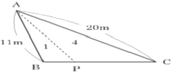
- 1m
- 2m
- 3m
- 4m
(정답률: 68%)

2. 철도 곡선부의 캔트량을 계산할 때 필요 없는 요소는?
- 궤간
- 속도
- 교각
- 곡선의 반지름
(정답률: 86%)
3. 터널측량에 대한 설명으로 옳지 않은 것은?
- 터널 내의 곡선 설치는 일반적으로 지상에서와 같이 편각법, 중앙종거법 등을 사용한다.
- 터널의 길이방향은 삼각측량 또는 트래버스측량으로 행한다.
- 터널 내의 측량에서는 기계의 십자선 또는 표척에 조명이 필요하다.
- 터널측량은 터널 외 측량, 터널 내 측량, 터널 내ㆍ외 연결측량으로 나눌 수 있다.
(정답률: 72%)
4. 자동차가 곡선부를 통과할 때 원심력의 작용을 받아 접선방량으로 이탈하려고 하므로 이것을 방지하기 위하여 노면에 높이차를 두는 것을 무엇이라 하는가?
- 확폭(slack)
- 편경사(cant)
- 완화구간
- 시거
(정답률: 90%)
5. 축척 1:10000의 도면상에서 디지털구적기를 사용하여 면적을 관측하였더니 2800m2이었다. 그런데 이 도면은 종횡 모두 1%씩 수축이 되어 있었다면 실제 면적은 약 얼마인가?
- 2829m2
- 2857m2
- 2745m2
- 2773m2
(정답률: 41%)
6. 그림과 같이 하천의 BC선을 따라 심천측량을 실시하려고 A점에서 CB에 직각으로 하여 AB=100m가 되도록 하였다. 배가 P에 있을 때 ∠APB를 측정한 결과 30°이었다면 BP의 거리는?
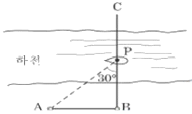
- 50.01m
- 57.74m
- 86.60m
- 173.21m
(정답률: 58%)
7. 완호곡선의 종류에서 가장 먼저 곡률반지름이 작아지는 A곡선에 해당되는 것은?
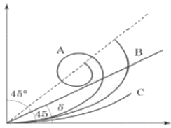
- 클로소이드
- 렘니스케이트
- 3차 포물선
- 2차 포물선
(정답률: 80%)
8. 70°의 경사를 이루고 있는 30m 경사 터널에서 수평각을 관측할 때 3mm 시준오차가 발생하였다면 수평각오차는?
- 25.2"
- 24.2"
- 21.6"
- 20.6"
(정답률: 38%)
9. 그림과 같이 도로를 계획하여 시공 중 옹벽설치를 추가하였다. 빗금 친 부분과 같은 옹벽바깥쪽의 단위길이 당 토량은?
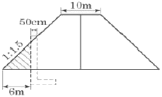
- 10m3
- 12m3
- 24m3
- 27m3
(정답률: 62%)
10. 클로소이드 곡선의 매개변수(A)를 2배 늘리면 곡선반지름(R)이 일정할 때 완화곡선길이(L)는 몇 배가 되는가?
- √2
- 2
- 4
- 8
(정답률: 77%)
11. 완화곡선의 종류에 해당되지 않는 것은?
- 3차 포물선
- 렘니스테이트 곡선
- 2차 포물선
- 클로소이드 곡선
(정답률: 82%)
12. 하천의 수면으로부터 수심에 따른 유속을 관측한 결과가 표와 같을 때, 3점법에 의한 평균유속은?
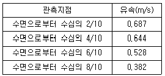
- 0.531m/s
- 0.560m/s
- 0.571m/s
- 0.589m/s
(정답률: 68%)
13. 반지름 500m의 원곡선에서 시단현 15m에 대한 편각은?
- 약 54' 34"
- 약 53' 34"
- 약 52' 34"
- 약 51' 34"
(정답률: 66%)
14. 하천에서 수심측량 후 측점에 숫자로 표시하여 나타내는 지형표시 방법은?
- 점고법
- 기호법
- 우모법
- 등고선법
(정답률: 82%)
15. 그림과 같은 흙의 토량은? (단, 계산은 각주공식을 사용함)
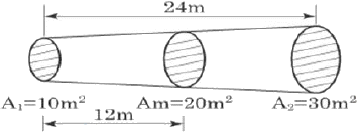
- 500m3
- 480m3
- 360m3
- 280m3
(정답률: 77%)
16. 경관구성요소의 구분에 대한 설명으로 옳지 않은 것은?
- 인식의 주체인 시점계
- 인식대상이 되는 대상계
- 대상을 둘러싸고 있는 경관장계
- 전경, 중경, 배경의 상대적 효과인 상대성계
(정답률: 71%)
17. 터널측량에 있어서 지상측량의 좌표와 지하측량의 좌표를 같게 하는 측량은?
- 지표 중심선 측량
- 터널 좌표 측량
- 지하 중심선 측량
- 터널 내외 연결측량
(정답률: 83%)
18. 수심을 관측하기 위하여 음향측심기를 이용한 관측값이 음파송신시간 0.3초, 수중음속 1520m/s이었다면 수심은?
- 151m
- 228m
- 456m
- 755m
(정답률: 53%)
19. 지상 9km2의 면적을 지도상에서 36cm2으로 표시하기 위한 축척은?
- 1:30000
- 1:40000
- 1:50000
- 1:60000
(정답률: 46%)
20. 노선측량에서 곡선을 설치하기 위한 요소 중 가장 중요한 요소는?
- 접선길이와 장현
- 곡선길이와 중앙종거
- 곡선반지름과 접선길이
- 교각과 곡선반지름
(정답률: 81%)
2과목: 사진측량 및 원격탐사
21. 원격탐사의 분류기법 중 감독분류기법에 대한 설명으로 옳은 것은?
- 작업자가 분류단계에서 개입이 불필요하다.
- 대상지역에 대한 샘플 자료가 없을 경우에 적당한 분류기업이다.
- 영상의 스펙트럼 측성만을 가지고 분류하는 기법이다.
- 수치지도, 현장자료 등 지상검증자료를 샘플로 이용하여 분류한다.
(정답률: 73%)
22. 한 장의 사진 내에서 축척의 변화가 없이 균일한 사진은?
- 경사사진
- 수직사진
- 수렴사진
- 정사사진
(정답률: 71%)
23. 지상기준점이 반드시 필요한 표정은?
- 내부표정
- 상호표정
- 절대표정
- 접합표정
(정답률: 55%)
24. 항공사진의 촬영방법에 의한 분류 중 화면에 지평선이 찍혀 있는 사진을 무엇이라 하는가?
- 수직사진
- 고각도 경사사진
- 저각도 경사사진
- 수렴사진
(정답률: 75%)
25. 초점거리 150mm, 사진의 크기 23cm×23cm의 카메라로 찍은 항공사진의 경사각이 15°이면 이 사진의 연직점(nadir point)과 주점(principal point)과의 사진 상에서의 거리는? (단, 연직점은 사진 중심점으로부터 방사선(radial line) 위에 있다.)
- 40.2mm
- 50.0mm
- 75.0mm
- 100.5mm
(정답률: 55%)
26. 위성영상에서 지도와 같은 특성을 갖도록 기본변위와 카메라 자세에 의한 변위를 제거한 정사보정 영상의 활용 분야와 거리가 먼 것은?
- 실내지도 제작 분야
- 토지피복지도 제작 분야
- 도로지도 제작 분야
- 환경오염도 제작 분야
(정답률: 70%)
27. 수치지도로부터 수치지형모델(DTM)을 생성하려고 한다. 어떤 레이어가 필요한가?
- 건물 레이어
- 하천 레이어
- 도로 레이어
- 등고선 레이어
(정답률: 87%)
28. 고도 3000m에서 초점거리 150mm, 사진크기 23cm×23cm인 카메라를 이용하여 사진촬영을 하였다. 촬영경로가 3개이고 촬영경로당 9개의 입체모델이 촬영되어 있다면, 사진측량 대상지역의 크기는? (단, 종중복도는 60%, 횡중복도는 30%이다.)
- 16.56km×9.66km
- 18.40km×9.66km
- 16.56km×13.80km
- 18.40km×13.80km
(정답률: 44%)
29. 사진의 중복도에 대한 설명 중 틀린 것은?
- 중복도가 높아지면 모델수가 증가한다.
- 일반적으로 중복도가 클수록 경제적이다.
- 일반적으로 중복도가 클수록 폐색영역이 적어진다.
- 산악이나 고층건물이 많은 시가지는 중복도를 높여서 촬영한다.
(정답률: 86%)
30. 기복변위는 사진면에서 어느 점을 중심으로 발생하는가?
- 사진지표
- 기준점
- 연직점
- 표정점
(정답률: 73%)
31. 위성을 이용한 원격탐사(Remote Sensing)에 대한 설명으로 옳지 않은 것은?
- 회전주기가 일정하므로 원하는 지점 및 시기에 관측이 용이하다.
- 탐사된 자료는 다양한 처리과정을 거쳐 재해 및 환경 문제 해결에 활용할 수 있다.
- 관측이 좁은 시야각으로 실시되므로, 얻어진 영상은 정사투영에 가깝다.
- 짧은 시간 내에 넓은 지역을 동시에 측정할 수 있으며, 반복관측이 가능하다.
(정답률: 70%)
32. 사진측량에서 모델이란 무엇을 의미하는가?
- 편위수정된 사진이다.
- 한 장의 사진에 찍힌 면적이다.
- 어느 지역을 대표하는 사진이다.
- 중복된 한 쌍의 사진으로 입체시 할 수 있는 부분이다.
(정답률: 86%)
33. 그림은 어느 지역의 토지 현황을 나타내고 있는 지도이다. 이 지역을 촬영한 7×7 영상에서 "호수"의 훈련지역(training field)을 선택한 결과로 적합한 것은?
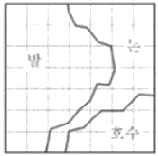
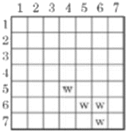
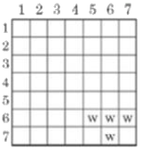
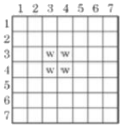
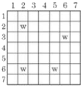
(정답률: 83%)
34. 입체도화기에 의한 표정 작업에서 일반적으로 오차의 파급효과가 가장 큰 것은?
- 절대표정
- 접합표정
- 상호표정
- 내부표정
(정답률: 51%)
35. 항공사진측량의 공정 순서를 바르게 나열한 것은?
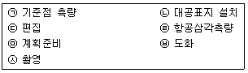
- ㉤-㉠-㉣-㉦-㉡-㉥-㉢
- ㉤-㉠-㉡-㉣-㉦-㉢-㉥
- ㉤-㉦-㉠-㉡-㉢-㉣-㉥
- ㉤-㉡-㉦-㉠-㉣-㉥-㉢
(정답률: 55%)
36. 내부표정에서 투영점을 찾기 위하여 설정하여야 하는 2가지 요소는?
- 카메라의 종류, 촬영고도
- 사진지표, 촬영고도
- 촬영위치, 촬영고도
- 주점, 초점거리
(정답률: 69%)
37. 수치사진측량 기법 중 내부표정의 자동화에 사용되는 것은?
- 좌표등록
- 영상정합
- 3차원 도화
- DEM
(정답률: 62%)
38. 항공사진 촬영에서 종중복도가 70%일 때 촬영기선길이는? (단, 사진의 크기=23cm×23cm, 축적=1:15000)
- 1.035km
- 2.075km
- 3.450km
- 9.000km
(정답률: 73%)
39. 8bit grey leve(0~255)을 가진 수치영상의 최소 픽셀 값이 79, 최대 픽셀 값이 156이다. 이 수치영상에 선형대조비확장(Linear Contrast Stretching)을 실시할 경우 픽셀 값 123의 변화된 값은? (단, 계산에서 소수점 이하 값은 무시(버림)한다.)
- 143
- 144
- 145
- 146
(정답률: 53%)
40. 항공사진측량에서 광각 사진과 보통각 사진의 비교 설명으로서 틀린 것은?
- 축척이 같으면 광각 사진의 촬영고도가 보통각 사진의 촬영고도보다 낮다.
- 촬영고도가 같으면 광각 사진의 축척은 보통각 사진의 축척보다 크다.
- 광각 사진의 화각은 보통각 사진의 화각보다 크다.
- 광각사진의 초점거리는 보통각 사진의 초점거리보다 짧다.
(정답률: 64%)
3과목: GIS 및 GPS
41. 관계형 데이터베이스에 대한 설명으로 틀린 것은?
- 관계형 데이터베이스에서 가장 작은 데이터단위를 도메인이라 한다.
- 관계형 데이터의 행을 구성하는 속성값을 튜플이라 한다.
- 관계형 데이터베이스에서 하나의 릴레이션에서는 튜플의 순서가 존재한다.
- 관계형 데이터베이스는 테이블의 집합체라고 할 수 있다.
(정답률: 52%)
42. 원격탐사를 통한 GIS 데이터를 획득할 때에 classification(분류) 방법이 자주 사용된다. 감독분류(supervised classification) 방법 중 알고자 하는 픽셀이 어느 등급에 속하는 지의 확률을 계산하여 두 군집이 겹치는 부분에 속하는 픽셀은 정규분포곡선 그림을 통해 가장 속할 확률이 높은 군집에 할당시키는 방법은?
- 평행육면제 분류(Parallelpiped classify)
- 최대우도법(Maxium likelyhood classify)
- 최소거리 분류(Minimum distance to means classify)
- K-mean
(정답률: 74%)
43. 래스터 데이터(격자 자료) 구조에 대한 설명으로 옳지 않은 것은?
- 셀의 크기에 관계없이 컴퓨터에 저장되는 데이터의 용량을 항상 일정하다.
- 셀의 크기는 해상도에 영향을 미친다.
- 셀의 크기에 의해 지리정보의 위치 정확성이 결정된다.
- 연속면에서 위치에 변화에 따라 속성들의 점진적인 현상 변화를 효과적으로 표현할 수 있다.
(정답률: 87%)
44. 정밀측위를 위하여 GPS측량을 이용하고자 할 때 가장 부적합한 방법은?
- 반송파 위상관측
- 차분법에 의한 상대측위
- 코드 측정방식에 의한 절대측위
- 동시에 4개 이상의 위성신호수신과 위성의 양호한 기하학적 배치상태를 고려한 관측
(정답률: 50%)
45. 다음 중 벡터 기반의 디지털 자료 변환 과정의 단계(작업)에 해당하지 않는 것은?
- 세분화
- 획득
- 형식화
- 편집
(정답률: 50%)
46. GPS의 단독측위를 수행하는데 있어 정확도에 영향을 미치는 요인과 가장 거리가 먼 것은?
- 위성의 궤도정보
- 위성의 배치상태
- 기선해석에 따른 후처리 과정
- 수신기에 의한 의사거리 측정오차
(정답률: 52%)
47. 다음 데이터 중 표현 형식이 다른 하나는?
- 그리드 형태의 수치표고모형(DEM)
- 불규칙삼각망(TIN)
- 위성영상
- 항공사진
(정답률: 52%)
48. 지리정보시스템의 이용효과 중 거리가 먼 것은?
- 자료의 수치화 작업을 용이하게 해 준다.
- 정보의 보안성은 향상되나 투자의 중복이 심화될 수 있다.
- 수집한 자료는 다른 여러 자료와 유용하게 결합할 수 있다.
- DB 체계를 통하여 자료를 더욱 간편하게 사용할 수 있고 자료 입수도 용이하다.
(정답률: 80%)
49. 지형공간자료를 입력하는 단계로 옳게 나열된 것은?
- 공간(위치)정보의 입력→비공간 속성자료의 입력→공간자료와 비공간자료의 연결
- 비공간 속성자료의 입력→공간자료와 비공간자료의 연결→공간(위치)정보의 입력
- 공간자료와 비공간자료의 연결→공간(위치)정보의 입력→비공간 속성자료의 입력
- 공간(위치)정보의 입력→공간자료와 비공간자료의 연결→비공간 속성자료의 입력
(정답률: 75%)
50. 수치표고모델(DEM)과 TIN의 비료 설명으로 옳은 것은?
- 수치표고모델(DEM)은 불규칙적인 공간 간격으로 표고를 표현한다.
- LiDAR 또는 GPS로 취득한 지형자료를 이용할 경우엔 DEM 방법이 유리하다.
- TIN 방법은 사진측량에 의한 자동 디지타이징에 의한 지형자료 취득 시에 유리하다.
- 지역적인 변화가 심한 복잡한 지형을 표현할 때엔 TIN이 유리하다.
(정답률: 52%)
51. 위성항법체계인 GPS위성의궤도경사각은 몇 도 이고, 적도면상 몇 도의 간격으로 배치되어 있는가?
- 궤도경사각 55°, 적도면상 55°간격
- 궤도경사각 55°, 적도면상 60°간격
- 궤도경사각 60°, 적도면상 55°간격
- 궤도경사각 60°, 적도면상 60°간격
(정답률: 82%)
52. A점과 B점 사이 임의의 한 점 P의 표고를 선형보간법을 이용하여 구하려고 한다. A점과 B점 사이의 거리를 L, A점과 P점 사이의 거리를 xp, A점의 표고를 a, B점의 표고를 b, P점의 높이를 hp라 할 때 옳은 식은?
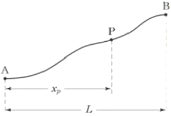
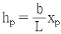
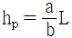
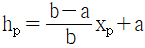
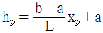
(정답률: 55%)
53. 수치고도모델(DEM)을 통하여 분석할 수 없는 것은?
- 경사도와 사면방향
- 지형단면과 굴곡도
- 토지이용
- 가시권
(정답률: 74%)
54. 다음 중 어떤 특정한 현상(강우량, 토지이용현황 등)에 대해 표현할 것을 목적으로 작성된 지도를 일컫는 용어는?
- 주제도
- 챠트
- 지형분석도
- 시설물도
(정답률: 75%)
55. TIN의 구성요소가 아닌 것은?
- 경계(edges)
- 절점(vertices)
- 평면 삼각면(faces)
- 브레이크 라인(break lines)
(정답률: 74%)
56. 지형공간정보 체계의 자료에 대한 설명으로 옳지 않은 것은?
- 위치자료는 도면이나 지도와 같은 도형에서 위치 값을 수록하는 정보파일이다.
- 자료는 위치자료(도형자료)와 특성자료(속성자료)로 대별될 수 있다.
- 위치자료와 특성자료는 서로 연관성을 가지고 있어야 한다.
- 일반적인 통계자료 또는 영상파일은 특성자료로 사용될 수 없다.
(정답률: 74%)
57. 다음 중 자료의 입력과정에서 발생하는 오류와 관계없는 것은?
- 공간정보가 불완전하거나 중복된 경우
- 공간정보의 위치가 부정확한 경우
- 공간정보가 좌표로 표현된 경우
- 공간정보가 왜곡된 경우
(정답률: 73%)
58. 오픈 소프트웨어(open source software)에 대한 설명으로 옳지 않은 것은?
- 일반 사용자에 의해서 소스코드의 수정과 재배포가 가능하다.
- 전문 프로그래머가 아닌 일반 사용자도 개발에 참여할 수 있다.
- 사용자 인터페이스가 상업용 소프트웨어에 비해 우수한 것이 특징이다.
- 소스코드가 제공됨으로써 자료처리 과정을 명확하게 이해할 수 있는 장점이 있다.
(정답률: 77%)
59. 벡터구조에 비해 격자구조(Grid 또는 Raster)가 갖는 장점으로 틀린 것은?
- 자료구조가 간단하다.
- 중첩에 대한 조작이 용이하다.
- 다양한 공간적 편의가 격자형 형태로 나타난다.
- 위상관계를 입력하기 용이하므로 위상관계 정보를 요구하는 분석에 효과적이다.,
(정답률: 56%)
60. 기하학적 정밀도(GDOP)는 위성의 배치상태에 따라 관측 정확도에 영향을 미친다. 그림에서 위성의 배치상태가 가장 양호한 것은? (단, 그림 내 모든 위성의 Mask of angle은 15° 이상이다.)
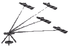
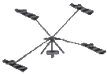
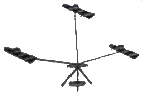
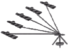
(정답률: 74%)
4과목: 측량학
61. 방위각과 방향각에 대한 설명으로 옳은 것은?
- 방위각은 우회전 관측각이며 방향각은 좌회전 관측각이다.
- 방위각은 진북을 기준으로 한 것이며 방향각은 적도를 기준으로 한 것이다.
- 방위각은 자오선을 기준으로 하며 방향각은 임의의 기준선을 기준으로 한다.
- 방위각과 방향각은 동일한 것으로 사용지역에 따라 구별된다.
(정답률: 58%)
62. 수평각 측정방법 중 정도가 가장 높은 관측방법은?
- 단축법
- 조합각 관측법
- 배각법
- 방향각 관측법
(정답률: 59%)
63. 전파거리 측량기는 변조파장으로부터 거리를 구할 수 있다. 이 때 변조파장(λ)을 구하는 식으로 옳은 것은? (단, V : 보정된 전파 에너지속도, f : 변조 주파수)
- f/V
- V2/f
- V/f2
- V/f
(정답률: 65%)
64. 직사각형의 면적을 계산하기 위하여 거리를 측정한 결과 가로의 길이는 50m±0.01m이고, 세로의 길이는 100mm±0.02m인 경우에 면적에 대한 오차는?
- ±0.0002m2
- ±0.02m2
- ±1.41m2
- 2.5m2
(정답률: 45%)
65. 각 측량의 기계적 오차 중 망원경의 정ㆍ반 위치에서 측정값을 평균해도 소거되지 않는 오차는?
- 연직축 오차
- 시준축 오차
- 수평축 오차
- 편심 오차
(정답률: 72%)
66. 표중척보다 3cm 짧은 50m 테이프로 관측한 거리가 200m이었다면 이 거리의 실제의 거리는?
- 201.20m
- 200.88m
- 200.12m
- 199.88m
(정답률: 68%)
67. 수준측량에서 미지점의 표척을 시준한 값을 무엇이라 하는가?
- 후시
- 전시
- 중간점
- 이기점
(정답률: 61%)
68. 지형의 표시법 중 하천, 항만, 해양측량 등에서 수심을 표시하는 방법으로 주로 사용되는 것은?
- 우모선법
- 음영법
- 점고법
- 채색법
(정답률: 75%)
69. 그림과 같은 단삼각망의 관측결과가 α=58°43'25", β=45°16'30", γ=75°59'44"라고 할 때 조정에 관한 설명으로 옳은 것은? (단, AB의 기선임)
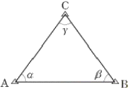
- 폐합오차가 21"이므로 각 보정량 7"를 α, β, γ에 각각 더하여 보정한다.
- 조건식의 총수는 2개이고 그 중 1개는 각 조건식, 나머지 1개는 측점조건식이다.
- 조건식의 층수는 1개이고 측점조건식이다.
- 폐합오차가 없으므로 관측값 보정이 필요없다.
(정답률: 64%)
70. 수준측량을 실시한 결과가 그림과 같을 때, B점의 표고는? (단, 단위 : m)
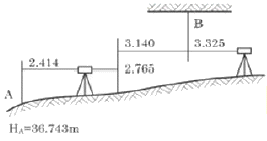
- 36.207m
- 38.029m
- 42.857m
- 43.559m
(정답률: 48%)
71. 지구의 적도반지름이 6370km이고 편평률이 1/299이라고 하면 적도반지름과 극반지름의 차이는?
- 21.3km
- 31.0km
- 40.0km
- 42.6km
(정답률: 70%)
72. 등고선의 성질에 대한 설명으로 옳지 않은 것은?
- 등고선은 분수선과 직교한다.
- 등고선은 경사가 다른 곳에서 간격이 일정하다.
- 등고선은 절벽이나 동굴 등의 특수한 지형 외는 합치거나 교차하지 않는다.
- 등고선 간의 최단 거리의 방향은 그 지표면의 최대 경사의 방향을 가리키며 최대 경사의 방향은 등고선에 수직인 방향이다.
(정답률: 63%)
73. 토털스테이션으로 1회 각 관측을 할 때 생기는 우연 오차가 ±0.01m라 하면 16회 연속 각 관측을 했을 때의 전체 오차는?
- ±0.32m
- ±0.16m
- ±0.08m
- ±0.04m
(정답률: 65%)
74. 표고 112.24m 지점에서 관측한 기선장이 3321.25m이면 평균해수면상의 거리로 보정 된 기선장은? (단, 지구는 곡선반지름이 6370km인 구로 가정한다.)
- 3321.1915m
- 3321.2162m
- 3321.2204m
- 3321.2329m
(정답률: 39%)
75. 측량기준점을 크게 3가지로 구분할 때 이에 속하지 않는 것은?
- 국가기준점
- 수로기준점
- 공공기준점
- 지적기준점
(정답률: 67%)
76. 무단으로 측량성과 또는 측량기록을 복제한 자에 대한 벌칙 기준으로 옳은 것은?
- 3년 이하의 징역 또는 3천만원 이하의 벌금
- 2년 이하의 징역 또는 2천만원 이하의 벌금
- 1년 이하의 징역 또는 1천만원 이하의 벌금
- 300만원 이하의 과태료
(정답률: 64%)
77. 공공측량의 실시공고에 포함되어야 할 사항이 아닌 것은?
- 측량의 규모
- 측량의 종류
- 측량의 목적
- 측량의 실시기간
(정답률: 58%)
78. 측량기기 중 토털 스테이션의 성능검사 주기로 옳은 것은?
- 1년
- 2년
- 3년
- 5년
(정답률: 90%)
79. 공공측량의 실시에 대한 설명으로 옳은 것은?
- 기본측량성과만을 기초로 실시한다.
- 기본측량성과나 다른 공공측량성과를 기초로 실시한다.
- 기본측량성과나 일반측량성과를 기초로 실시한다.
- 다른 공공측량성과나 일반측량성과를 기초로 실시한다.
(정답률: 76%)
80. 측량의 기준에 관한 설명으로 틀린 것은?
- 위치는 세계측지계로 표시한다.
- 측량의 원점은 대한민국 경위도 원점 및 수준원점으로 한다.
- 지도제적을 위하여 필요한 경우에는 직각좌표와 높이로 표시할 수 있다.
- 해안선은 해수면이 최저조면이 이르렀을 때의 육지와 해수면과의 경계로 표시한다.
(정답률: 70%)